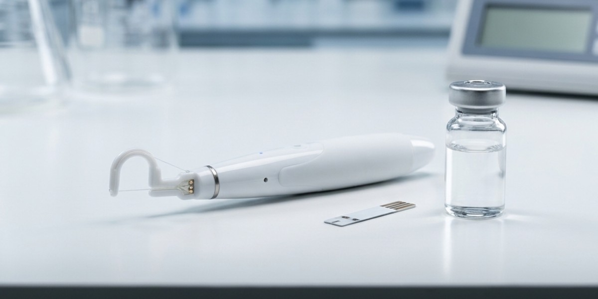

Geekotidien · Édition du 23 novembre 2026
Fil dentaire glycémie
Un fil dentaire connecté mesure la glycémie en trois minutes, en prototype

Des chercheurs de Hong Kong (HKUST et Université de Hong Kong) ont mis au point le « Gingival Fluid Device », un fil dentaire connecté. Il mesure en trois minutes la glycémie, l'acide urique, le pH et le peroxyde d'hydrogène dans le liquide gingival.
Lors de l'étude, menée sur 34 volontaires (dont 18 malades), la corrélation avec le sang atteint 0,89 pour le glucose et 0,78 pour l'acide urique. Le peroxyde d'hydrogène monte à 107,5 µmol/L sur les sites malades, contre 41,5 µmol/L sur gencive saine.
Il s'agit d'un prototype de recherche, avec des limites : la salive représente 47,99 % des prélèvements, et les échantillons contenant du sang sont exclus. Aucune date de commercialisation n'est annoncée. Ce dispositif ne remplace pas un lecteur de glycémie, et des essais cliniques plus larges sont nécessaires.
Le + : Le fil mesure aussi le peroxyde d'hydrogène, un indicateur de l'état des gencives, en plus de la glycémie.